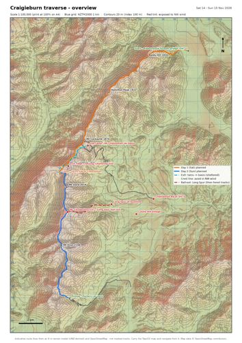
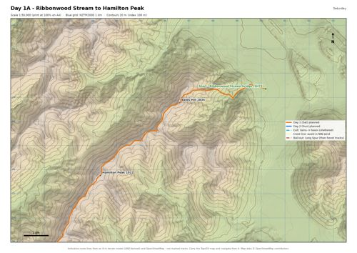
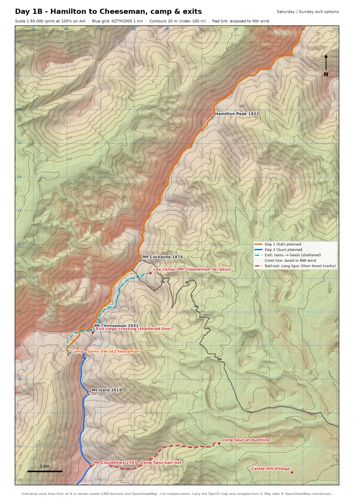
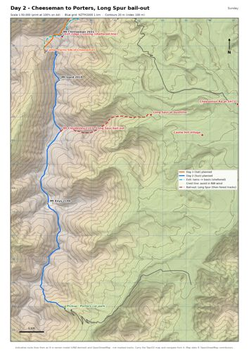

Craigieburn Range traverse
Sat 14 – Sun 15 Nov 2026 · Ribbonwood Stream (SH73) → Baldy Hill → Hamilton Peak → Mt Cheeseman → Mt Enys → Porters
Saturday morning forecast check (before 7 am)
As of Friday: Saturday fine. Sunday NW gale on the tops (written forecast: severe gale ~100 km/h at 2,000 m), building through the day, wind chill −4 to −6 °C.
Written mountain forecasts are usually issued early in the afternoon (Friday's Sunday forecast was 1:14 pm), so at 6:30 am Sunday's text may still be Friday's. The 3-hourly ski-field tables appear to refresh more often. If Sunday still shows a severe gale, consider options 1 or 2 below.
Video explainer (5½ min)
Open the interactive 3D flyover → (best on a laptop)
Maps & GPX downloads


Overview 1:100k (NW exposure tint)

Day 1A · Ribbonwood → Hamilton

Day 1B · Hamilton → Cheeseman, camp & exits

Day 2 · Cheeseman → Porters, Long SpurRoute lines are indicative (8 m terrain model + OpenStreetMap), not marked tracks. Carry the official Topo50 map. Blue grid = NZTM2000, same as Topo50.
Waypoints & bail-out points
Tap a name to open it on the official LINZ Topo50 map (topomap.co.nz). Red = exit/bail-out, orange = camp, green = start/finish.
| WAYPOINT | ELEV m | NZTM E N | NOTE |
|---|---|---|---|
| Start - Ribbonwood Stream bridge (SH73) | 663 | 1500189 5229352 | Day 1 start ~8:30 am |
| Baldy Hill 1834 | 1,826 | 1496598 5228786 | Top of Ribbonwood Spur |
| Hamilton Peak 1922 | 1,920 | 1493306 5225769 | Planned lunch |
| Mt Cockayne 1874 | 1,867 | 1491165 5221519 | |
| Mt Cheeseman 2031 | 2,018 | 1489721 5219474 | |
| Camp - tarns SW of Cheeseman | 1,671 | 1489034 5218713 | Planned camp ~1670 m (west side) |
| Exit ridge crossing (sheltered line) | 2,004 | 1489769 5219386 | Cross here, drop well below crest on E side |
| Lee camp / Mt Cheeseman ski basin | 1,678 | 1491475 5221151 | Sheltered from NW; ski-field road exit |
| Cheeseman Rd at SH73 | 648 | 1497169 5216537 | Bottom of ski-field road (~13 km road walk from basin) |
| Mt Izard 2019 | 2,013 | 1489644 5217564 | |
| Mt Cloudesley 2107 - Long Spur bail-out | 2,103 | 1489714 5215412 | Top of Long Spur (unmarked, not DOC-maintained) |
| Long Spur at bushline | 918 | 1493514 5216085 | End of Long Spur ~920 m; ~4-5 km forest tracks to Castle Hill |
| Castle Hill Village | 730 | 1495679 5215233 | Bail-out destination |
| Mt Enys 2194 | 2,186 | 1489162 5212344 | Highest point |
| Pickup - Porters car park | 1,292 | 1489877 5207909 | Day 2 finish ~1290 m |
- Tarns → Mt Cheeseman basin (sheltered line): ~4.3 km, +370 m. Cross the ridge just south of Cheeseman's summit, then drop well below the crest on the east side. Avoid the crest line (~2.3 km exposed). The lee side still gets violent gusts just below the crest.
- Mt Cheeseman ski-field road: ~13 km road walk from the basin to SH73, sheltered once in the beech forest. Check vehicle access if you want a pickup higher up.
- Mt Cloudesley → Long Spur: ~4.3 km to the bushline (~920 m), then ~4–5 km of forest tracks to Castle Hill village. Unmarked and not maintained by DOC; easy to lose in cloud.
Keeping the trip, lowering the risk
In a nor'wester the west side of the range takes the wind. The east side, including the Mt Cheeseman ski basin, is sheltered. The planned tarns are on the west side.
| OPTION | SATURDAY | SUNDAY |
|---|---|---|
| 1 · Camp in the lee | As planned, then down into Mt Cheeseman basin (~19.8 km) | Decide at dawn: ridge to Enys & Porters if manageable, or walk out the ski-field road (~13 km to SH73) |
| 2 · Reverse it | Porters → Enys → Cloudesley → Izard → Cheeseman → basin (~16.7 km, ~1,700 m up, 8–10 h): highest ground on the fine day | Walk out the ski-field road. Needs drop-off at Porters & pickup on Cheeseman Rd; check road access |
| 3 · Original, with turnarounds | As planned | Start at first light. Exits: sheltered line to Cheeseman basin, or Long Spur from Mt Cloudesley. After Cloudesley you're committed to the most exposed stretch |
Planned route
| DAY | ROUTE | DISTANCE | CLIMB | MOVING TIME (EST.) |
|---|---|---|---|---|
| SAT | SH73 Ribbonwood bridge (~660 m) → Ribbonwood Spur → Baldy Hill 1,834 → Hamilton Peak 1,922 (lunch) → Mt Cockayne → Mt Cheeseman 2,031 → tarns (~1,670 m) | ~18 km | ~2,000 m up | 8½–11 h + breaks. Start ~8:30 am, sunset 8:43 pm |
| SUN | Tarns → Mt Izard 2,019 → Mt Cloudesley 2,107 → Mt Enys 2,194 → Porters ski area → car park (~1,290 m) | ~13.5 km | ~1,000 m up, ~1,400 m down | 6–8 h. Away by 7 am |
Distances and climbs are estimates from an 8 m terrain model (±10%). Terrain: AWS/Mapzen terrain tiles (incl. LINZ 8 m DEM). Peaks, tarns, roads & tracks © OpenStreetMap contributors. The video reflects MetService's forecast as at Friday 13 Nov; always use the latest MetService forecast. Narration voice: Phonon "Preston".